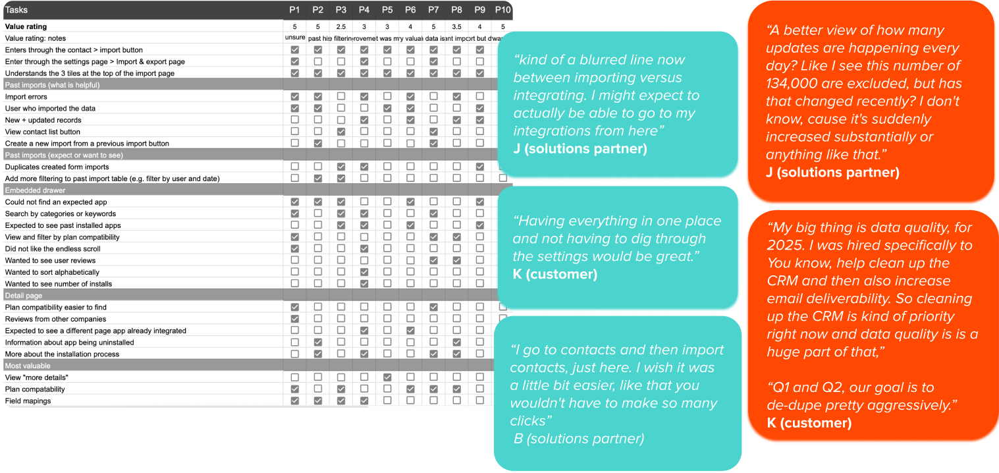
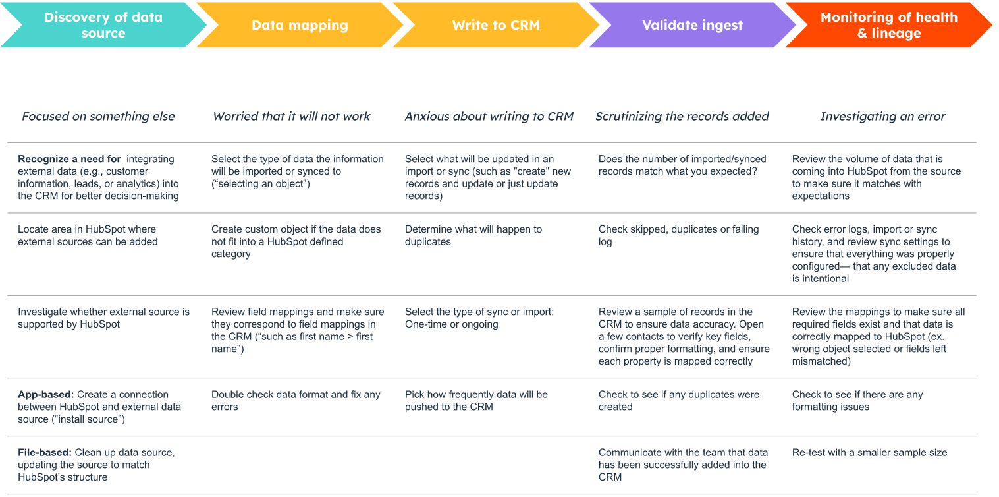
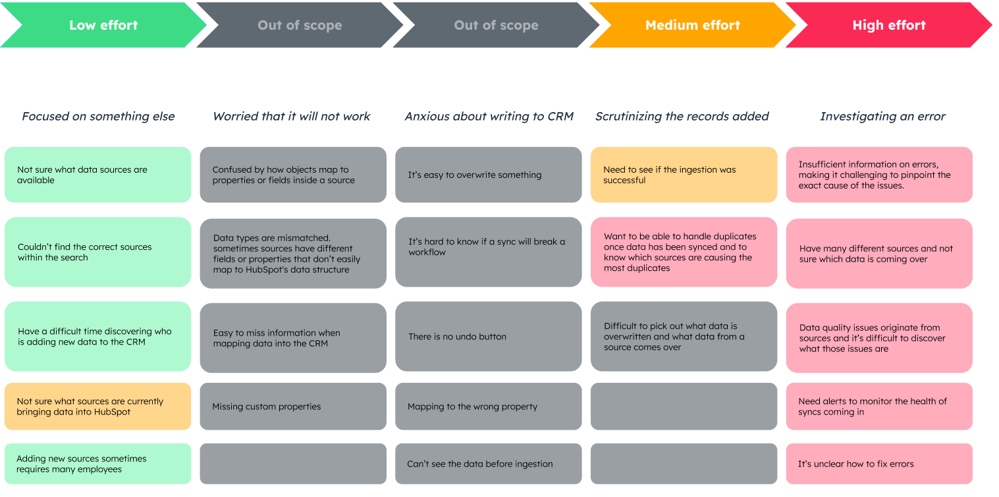

Overview
HubSpot is a CRM with integrated marketing, sales, e-commerce, and customer service tools, and adding data to the platform is an essential task for its users. More than 1.5 million users add data to HubSpot every month, but only about 20,000 of them do it by setting up app syncs. That gap matters because the more data users bring into HubSpot, the stickier the platform becomes and the less likely they are to churn. Users who set up an app sync are retained longer, and some integrations, such as Salesforce, can extend retention by more than six months.
The solutionA “data home”: one central place in HubSpot where users can find every way to bring data in, see which sources are updating their CRM, and catch problems early.
Team & role
The team
- 3 engineers
- 1 product manager
- 1 senior product designer 👋
User research
- Competitive analysis
- Persona building
- Product audit
- User journey mapping
- Concept testing
- Customer interviews
Designing
- Brainstorming
- Service design
- Visioning
- Wireframing
- User flows
- Information architecturing
- Prototyping
Product strategy
- Project roadmapping
- Impact / effort analysis
Testing
- Usability testing
- A/B testing
Discovery research
I noticed a large drop-off in the sync setup flow: many users started setting up a sync from the “add data” page and never finished. That page gets 30M+ monthly users, and app syncs are closely tied to retention, so I wanted to find out why people were leaving before proposing a fix. I interviewed 10 customers and solutions partners who had abandoned a sync in the last 30 days. I asked about their goals, how much they valued the data, how they moved through the page, and where they got frustrated.

Journey Mapping
From what I heard, I built a five-stage journey map, from discovering a data source to monitoring its health over time, covering both what users had to do and how they felt along the way. Two themes stood out. The first was discovery. Half of participants couldn’t find the app they were looking for. They used “sync,” “import” and “migrate” interchangeably, so the product’s split between imports and integrations didn’t make sense to them, and they wanted everything in one place. Adding data was also rarely the goal in itself; it was one step in a bigger task. The second theme was visibility. Every participant expected to see their syncs on the import page, and they wanted to understand how incoming data affected their CRM: which records changed, which workflows ran, and where duplicates came from. Data quality, and duplicates in particular, was a major concern.

Prioritization
I used an impact/effort analysis to sort each pain point into short, medium or long term, with data mapping and writing to the CRM out of scope. The low-effort fixes made sources easier to find: better marketplace search, filtering in Past Imports, and a link to “add data” in the main nav. The medium-effort work brought every app, dataset and private-app sync onto one page, built with the new design system. The high-effort work was the long-term “data home” vision, with central monitoring, alerts and a single source table for visibility and data quality. Phasing it this way let us deliver early wins while the bigger vision was tested and refined.
High effort > high valueObservability starts at the point of ingestion. If we give users one place to monitor every data source and flag issues before they spread, more of them will trust and set up syncs.

Get the full story
Learn more about this redesign process and hear some surprising takeaways from the user research. The full, unedited case study is available on request.